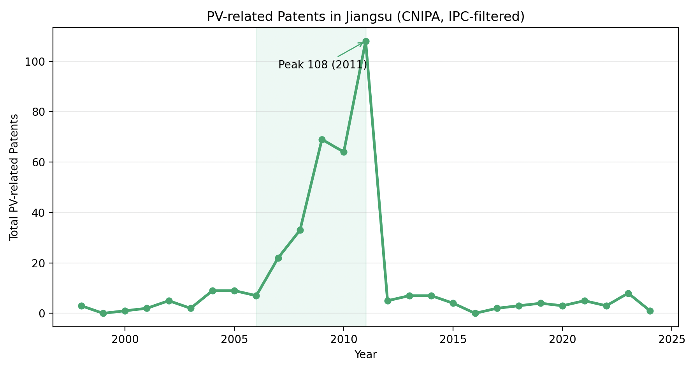
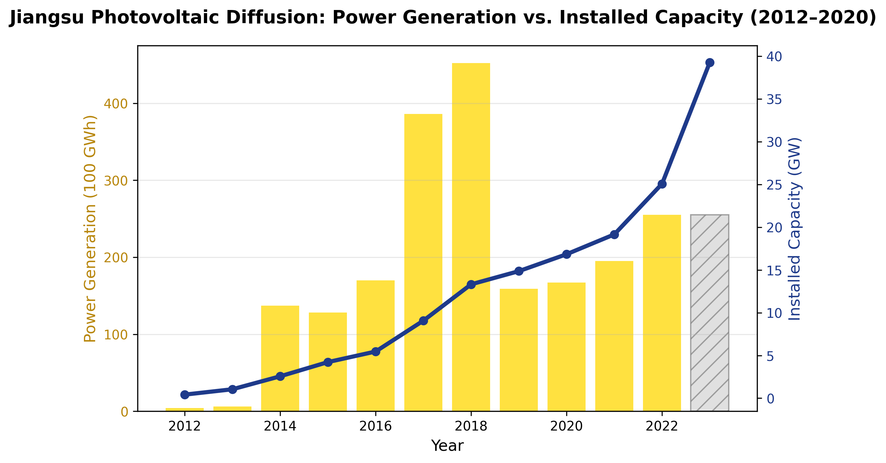
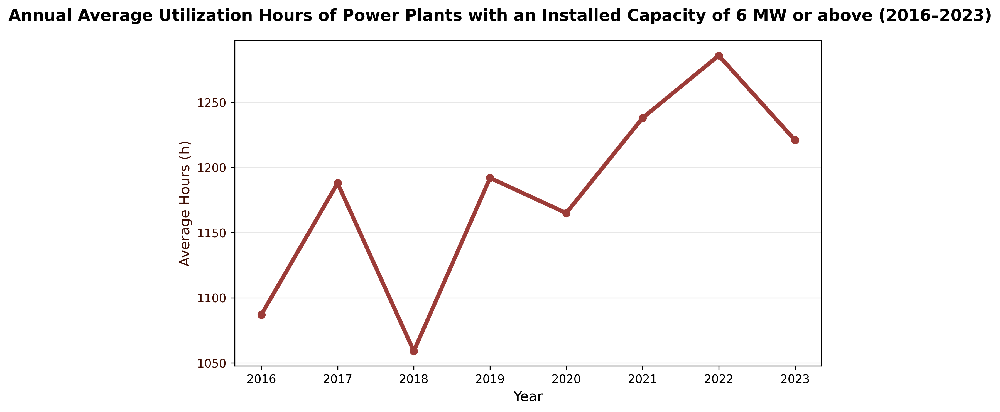

China's rapid rise as the world's largest producer and consumer of photovoltaic (PV) technology is often attributed to strong central planning and industrial policy. Yet much of the country's renewable transition unfolds not at the national but at the provincial level, where governments interpret, translate, and modify central directives according to local industrial structures and fiscal capacities. This paper examines how Jiangsu Province — one of China's earliest and most dynamic PV manufacturing bases — has navigated this multi-level governance framework from 1997 to 2024.
1. Competing Frameworks of China's Green Development Governance
A large body of literature explains China's renewable energy development through the lens of state-led mobilization and centralized coordination. These studies highlight the state's capacity to mobilize resources, steer markets, and maintain strategic industrial control (Dent, 2012; Wang & Yeh, 2020; Karagiannis et al., 2021; Pan et al., 2021; Yang, 2022; Tai, 2022; Hu, 2023; Hung, 2024; He, 2024; Brown, 2024).
While previous scholarship emphasizes hierarchical coordination, another strand of research highlights adaptive, networked, and participatory dynamics within China's political economy. These studies suggest that policy outcomes often emerge from feedback among firms, local governments, and social actors rather than from pure top-down design (Huang et al., 2020; Wang, 2021; Hu, 2025).
A growing body of research integrates these contrasting views, portraying China's development as a hybrid regime of central steering and local experimentation (Schubert & Heberer, 2015; Su & Tao, 2017; Han, 2021; Fischer et al., 2021; Zhang, 2024; Xiang & Lo, 2025). These studies depict China's governance as a dynamic equilibrium rather than a fixed model: central coercion delineates the limits of acceptable action, while adaptive, consultative processes and market mechanisms operate within those limits.
2. The Political Economy of China's Photovoltaic Industry
In 2020, the Chinese government committed to peaking CO₂ emissions before 2030 and achieving carbon neutrality by 2060 (Liu et al., 2023). This pledge positioned renewable energy as a national priority, with photovoltaic development viewed as both a co-benefit and a nature-based solution, simultaneously combating land degradation and producing clean energy.
Across the literature, government intervention typically includes law- and policy-making favorable to the PV industry, financial subsidies, and direct investment. Form 1 below illustrates how these interventions can be divided into four levels.

To capture the trajectory of China's PV sector, scholars use a common set of developmental indicators, each serving as a proxy for a specific aspect of growth:
- Research and innovation: patent counts, R&D expenditure, and innovation efficiency indices tracking technological advancement.
- Social integration: metrics such as rural electrification and agrivoltaic deployment linking PV development to social and environmental goals.
- Manufacturing capacity: annual production volume of solar equipment (cells, modules, wafers, polysilicon), reflecting industrial scale and competitiveness.
- Installed capacity: total power-generation capability from all PV systems, expressed in watts, kilowatts, or gigawatts.
Less frequently, studies incorporate export performance (Lin & Liu, 2024) and social acceptance (Irfan et al., 2021) to capture the global and societal dimensions of PV diffusion.
Whether state intervention consistently drives these indicators remains contested. Most studies acknowledge that policy support played an essential role in the early stages of industrialization (Wang, 2010; Yuan et al., 2014; Lin & Luan, 2020; Xu et al., 2020; Wang et al., 2021; Zhao & Wang, 2020; Liu, 2024; Usman, 2024; Lin et al., 2025) but argue that it cannot explain long-term performance.
3. Process Tracing of the PV Industry in Jiangsu Province
Provincial variation in land resources, solar radiation, and policy incentives produces marked spatial heterogeneity in installations. PV projects generally fall into two categories: centralized and distributed systems.
Jiangsu is characterized primarily by distributed systems. Encouraged by local subsidies and grid buyback schemes, distributed PV projects have flourished in Jiangsu, supported by robust infrastructure, skilled labor, and dense industrial clusters. Wang and Liu (2024) describe China's PV development as spatially and temporally uneven, with eastern coastal regions dominating manufacturing and Jiangsu Province at the forefront.
Wang and Liu also identify a neighborhood diffusion pattern in which PV enterprises cluster geographically, particularly in Jiangsu.
Provincial Policy Document Timeline
To identify relevant provincial policy documents corresponding to China's evolving PV governance between 1997 and 2024, we searched across official government portals to capture the interventions summarized in Form 1. The starting point of 1997 marks the launch of the "Light of China" initiative and the establishment of Trina Solar in Changzhou — Jiangsu's formal entry into PV manufacturing. The primary search targets were the most important state agencies releasing developmental strategies and core provincial agencies in Jiangsu coordinating energy, industrial development, and environmental protection:
- Jiangsu Development and Reform Commission (江苏省发展和改革委员会)
- Industry and Information Technology Department of Jiangsu Province (江苏省工业和信息化厅)
- Jiangsu Energy Regulatory Office of the National Energy Administration (国家能源局江苏监管办公室)
- People's Government of Jiangsu Province (江苏省人民政府)
- Department of Ecology and Environment of Jiangsu Province (江苏省生态环境厅)
- National Development and Reform Commission (中华人民共和国发展和改革委员会)
The search covered 1997–2024. Key findings from each agency are summarized below.
Jiangsu Development and Reform Commission (JDRC)
- 20 major policy files (2020–2024)
- Documents evolved from industrial encouragement (2020–2021) → distributed and offshore PV promotion (2023–2024) → financial reform and grid pricing mechanisms (2024)
- Prescriptive tone emphasizing top-down mobilization and inter-departmental synergy
Industry and Information Technology Department (MIIT Jiangsu)
- ~8 PV-related documents, mostly 2021–2024
- Responses to NPC deputy suggestions, pilot projects, and integration of distributed PV with industrial upgrading and digital infrastructure
- Policies emphasize industrial linkage rather than energy governance
Jiangsu Energy Regulatory Office (NEA Provincial Branch)
- ~90 items total (2018–2024): distributed PV work plans and grid-connection management (16); electricity subsidy oversight and complaint resolution (69); process supervision and innovation reports
- Practical orientation: task assignments, enforcement updates, public supervision reports (12398 hotline), and evaluations of local policy compliance
People's Government of Jiangsu Province
- ~10 relevant documents (2009–2025)
- Recent focus (2021–2025): distributed PV in urban clusters, integration with 14th Five-Year Plan energy and urban environmental goals, and regional pilot programs
Department of Ecology and Environment of Jiangsu Province
- Few direct PV policy documents; major reports on pilot projects (distributed and offshore PV) in cities such as Suzhou and Lianyungang
Cross-Agency Patterns
- Early stage (2009–2015): Initial institutionalization — implementation opinions on PV promotion, pilot demonstrations
- Middle stage (2016–2020): Industrial coordination and "green finance" integration
- Recent stage (2021–2024): Multi-level synergy — distributed and offshore PV, financial instruments, and carbon-neutral alignment
Compared with the national policy phases previously discussed, Jiangsu's provincial policy path shows a compressed and industry-oriented evolution. The province translated central strategies into regional cluster development, combining PV manufacturing with materials, electronics, and smart-grid sectors. It also encouraged embedding PV within green urban infrastructure and environmental regulation. In the post-subsidy era, the province emphasized coordination and system integration, linking offshore and distributed PV with grid investment, energy storage, and green finance. Overall, Jiangsu acts as an intermediary between central planning and municipal execution — regulating and supervising PV firms toward the nationally directed path while emphasizing flexibility and adjustment to local conditions.
At the municipal level, Jiangsu's governments introduced complementary subsidies to extend photovoltaic incentives to actors not fully covered by national and provincial programs. The Implementation Opinions on Accelerating Demonstration and Application of Distributed PV Power Generation issued by the Yangzhong Municipal People's Government (2015) granted a 0.3 RMB/kWh subsidy for residential rooftop systems for six years (2015–2021), explicitly excluding projects already receiving national or provincial aid. Suzhou Municipal People's Government (2015) offered an additional 0.1 RMB/kWh feed-in subsidy for grid-connected projects completed between 2014 and 2016, on top of national subsidies, for three years. Similarly, Wuxi High-Tech Zone Administrative Committee (2022) provided a one-time subsidy of 0.1 RMB/W for rooftop owners installing new distributed PV systems. Collectively, these policies highlight how municipal governments in Jiangsu played an adaptive, gap-filling role — localizing national and provincial energy transition goals through direct fiscal incentives and focusing on small-scale, privately initiated installations.
Provincial PV Industry Observation
Based on the four indicators generalized above, data were collected to capture the development trajectory of Jiangsu's PV industry. The indicators of manufacturing capacity and installed capacity were combined into a single dimension of diffusion, representing how widely PV technology has spread across the province. While national policies initially treated photovoltaics as instruments for rural electrification, Jiangsu entered the field through early enterprise formation — notably with Trina Solar (founded in 1997) and Suntech Power (founded in 2001), both private firms that became leaders in PV manufacturing.
Patent data were drawn from China National Intellectual Property Administration's Patent Search and Analysis platform, filtered by application location (Jiangsu Province) and IPC codes related to PV technology: H01L 31/00 (semiconductor devices for photoelectric conversion), H01L 21/00 (manufacturing processes), C30B 29/00 (single crystal growth, silicon ingots), and C01B 33/00 (silicon and its compounds, polysilicon).

Data on solar power generation and installed capacity were drawn from the 2013–2021 Electric Power Yearbooks (covering data from 2012 to 2020). Installed capacity refers to the maximum potential output of all operating PV generators, while power generation measures actual electricity produced over a year. The relationship between the two can be expressed as: Power Generation (GWh) = Installed Capacity (GW) × Operating Hours.

Figure 2 shows that domestic expansion did not begin until 2014, coinciding with the issuing of Several Opinions on Promoting the Healthy Development of the Photovoltaic Industry (2013) and the implementation of the National PV Development Plan (2014) — both of which sought to redirect production toward the domestic market after the international downturn caused by anti-dumping and anti-subsidy measures.
It is worth noting that annual average utilization hours of PV power plants with an installed capacity of 6 MW or above remained generally stable between 2016 and 2023 (see Figure 3). These figures primarily represent centralized PV power stations, in contrast to distributed systems. This stability indicates that distributed PV projects were disproportionately affected by the withdrawal of subsidies — making the post-2021 policy emphasis on integrating PV into the broader energy system both logical and necessary.

Can we therefore say that policy alone determines the life and death of PV projects? Not entirely. As early as 2006, the Renewable Energy Law and associated tax incentives and feed-in tariffs had already been established, yet domestic PV diffusion remained limited. What truly shifted the industry's trajectory was the collapse of overseas demand after 2011, which compelled enterprises to redirect production toward the domestic market. Subsidies helped stimulate project construction but did not drive the technological breakthroughs necessary for achieving grid parity — the point at which solar electricity becomes economically competitive with coal. As Gao Jifan, Chairman of Trina Solar, noted in an interview with National Business Daily (2024), the real catalyst for sustainable development lies in technological innovation, which must be respected and protected as the foundation of industrial competitiveness. Qu Xiaohua, Chairman of Atlas Solar Power Group, stated similar views in an interview with Energy China (2025).
Furthermore, the blind expansion of PV installations into regions poorly suited for solar power cannot be equated with genuine development. Since around 2013, agrivoltaic projects — which integrate solar energy with agricultural land use — have spread rapidly across China under the banner of the "green agenda." Yet, as Hu (2023, 2025) argues, many of these projects have been characterized by large-scale land acquisition, exclusionary enforcement, and disregard for local socioecological systems.
Recent media investigations (Wei, 2022; Economic Observer Online, 2024; Polaris Solar PV Network, 2024) continue to expose land-use conflicts surrounding rural PV projects. Local governments, motivated by short-term fiscal gains and modernization performance targets, frequently converted high-quality farmland into PV bases. Farmer complaints drew national attention through outlets such as Time Finance and CPPCC News (Hou, 2024). In response, the central government and multiple provincial authorities — including Jiangsu, Shanxi, and Tianjin — issued new regulations between 2023 and 2025 that strictly prohibit PV construction on basic farmland and establish higher land-use standards. These regulatory adjustments signify a shift from policy encouragement to corrective governance: they illustrate how environmental and social backlash has reshaped the trajectory of China's rural energy development, and simultaneously indicate a lack of institutional feedback channels and scarce resident participation in decision-making.
4. Synthesis: What Drives Jiangsu's PV Industry Development
Before 2011, despite the introduction of the Renewable Energy Law (2006) and a range of subsidies and strategic programs at national and provincial levels, enterprises such as Trina Solar and Suntech Power primarily targeted the international market. The state's early legal and institutional frameworks created favorable conditions but did not directly stimulate domestic diffusion. Only when global demand contracted after the 2011 anti-dumping and anti-subsidy rulings did firms redirect production to the domestic market — suggesting that market shocks rather than administrative command triggered this shift.
Between 2014 and 2018, policy support under the National PV Development Plan and the feed-in tariff scheme temporarily expanded domestic capacity. Yet this expansion largely reflected firms' pursuit of subsidy-based profits, not the deepening of technological competitiveness. When the "531 New Policy" (2018) sharply cut subsidies, many projects were abandoned — indicating that policy incentives shaped timing and scale, but enterprise profitability ultimately determined persistence. Subsidies and directives thus acted as catalysts, not as autonomous engines of growth.
The adaptive and participatory governance hypothesis also receives limited validation. Jiangsu's provincial policy documents demonstrate technical understanding and pragmatic concern, emphasizing innovation and local suitability, but the implementation of these principles was difficult to ensure as county governments pursued expansion to meet fiscal or performance targets. Furthermore, no evidence indicates meaningful participation from NGOs, communities, or residents during decision-making. Citizens' engagement occurred only ex post, through complaints after environmental or land-use harms had already materialized. Although Yearbook data, news reports, and industry reports by the China Photovoltaic Industry Association (2017–2023) indicate meetings between industry pioneers and government leaders, no evidence suggests that these pioneers took influential roles in the process of policy-making.
Jiangsu's PV development most closely aligns with the hybrid governance hypothesis: state frameworks set directions and boundaries, but enterprise profit motives and market fluctuations drive actual behavior. The central and provincial governments provide regulatory infrastructure and corrective governance — for instance, in post-2023 land-use restrictions — but these interventions often follow complaints and appeals rather than anticipate market excesses. In this sense, policy functions reactively rather than proactively, and economic pragmatism outweighs ideological mobilization.
Jiangsu's PV industry thus exemplifies a profit-centered hybrid governance model: one where state guidance and correction coexist with market-driven dynamics, and where sustainable technological progress remains contingent not on command or participation, but on the incentives and capacities of enterprises themselves.
References
The full bibliography is available for download below.
Download full references (PDF) ↓